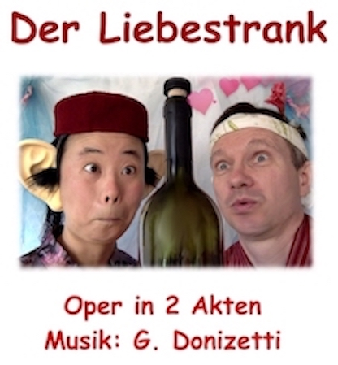
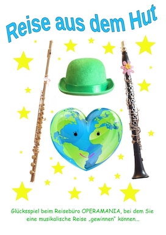

The World's Smallest Opera
About us Productions The Artists Guestbook & Press Prices & Conditions Program & Tickets Workshop Contact
|
"Largo al factotum della citta"
"Radio MDR Figaro - Hörer empfehlen Kultur"
|
Supported by: |
go to top
NEWS
|
OperaMania as a Present !
Looking for a birthday present ?
|
♪ MUSIC ON GONDOLA ♪ |
|
Building and Playing |
Stories about Travel |
go to top
|
OPERAMANIA performs Operas - however with ONLY TWO ACTORS !!?? Orchestra, Singers, Conductor, Director etc. does not exist at Operamania … Enjoy just brilliant opera music, which is arranged by KIKI and KUKU as duets for flute & clarinet, musical jokes, inventive anecdotes, costumes, and lot's of surprises !! | Our beautiful productions are comic operas, for
example, Gioacchino Rossini: “Il Barbiere di Siviglia”, “La Cenerentola”, “Guglielmo Tell”... suited for all people, children and adults at
all sorts of events, for example at
-
a birthday party -
a wedding anniversary -
a conpany celebration ...
|

Do you want to make your own venetian bigòlo ? Do you play an instrument and would like to do an opera yourself ? Music Course with Kiki & Kuku !
Are you looking for a quiet ambience to make music and inspire ?
Kiki and Kuku are happy to give you advice on our workshops.
Simply contact us.
Kiki and Kuku are happy to give you advice on our workshops.
Simply contact us.
or immerse yourself in the world of music ?
You can book a distinctive music class with Kiki and Kuku in Venice ! →
Building and Playing your own Clavichord
⚒ ✎ Workshop ♫
Learn to play the Piano the way of W. A. Mozart
→
Schedule "Venice - Dresden"
*****
go to top
♪ Almaviva ♪

also known as „The Futile Precaution“ or „The Barber of Seville“
Comedy by Pierre Augustin Caron de Beaumarchais (1732-1799)
Music by Gioacchino Rossini (1792-1868)
Synopsis: Seville, Spain, 17th century
Count Almaviva is falling in love with the beautiful young lady, who lives with her guardian, Dr. Bartolo. He is a pharmacist and quite aged. Almaviva does not want to be loved for his wealth. Therefore he pretends to be poor Lindoro and wins Rosinas heart.
There is only one problem – Dr. Bartolo also wants to marry Rosina. He takes strict precautions and only trusts his attractive housekeeper Marcellina.
The very popular barber Figaro is a friend of Almaviva. Dr. Bartolo is his regular customer. Can Figaro's help bring the opera to a happy end...?
Duration: 90 min (incl. break) or short version without break 60 min
♪ The Elixir of Love ♪

Comedy by Felice Romani (1788-1865)
Music by Gaetano Donizetti (1797-1848)
Love is where you find it – or is the way to a ladies heart rather through the stomach ? Nemorino being unhappy in love with Adina asks Dr. Dulcamara for a magic love potion. You, too, are welcome to try his newest inventions !
Duration: 90 min
♪ The Magic Clarinet ♪

also known as „La Cenerentola“ or „Cinderella “
Comedy by Jacopo Ferretti (1784-1852)
Music by Gioacchino Rossini (1792-1868)
The stingy Don Magnifico is going out to the dancing party at castle together with his daughters Clorinda and Thisbe. However, he does not want to bring along his stepdaughter Cenerentola.
Experience the true story of the most popular fairy tale and how a magic clarinet plays a prominent role !
Duration: 80 min (incl. break) or short version without break 50 min
♪ Bolero In The Opera ♪

also known as „Signor Bruschino“ “
Comedy by Giuseppe Maria Foppa (1760-1845)
Music by Gioacchino Rossini (1792-1868)
Synopsis: Gaudenzio's castle in France, 18th Century
Sofia and Florville are in love, but her gurdian, Gaudenzio, has already agreed to wed Sofia to the son of his old friend, Signor Bruschino...
Duration: 30 min
♪ Animals United ♪

by Erich Kaestner (1899-1974)
Music by Coboflupi (*1971)
Performing rights reserved by by the Verlag fuer Kindertheater Weitendorf, Hamburg
Join an international conference, where all problems in the world are solved with a lot of humor...!
Age recommendation: for adults and children 10+ "... for children and connoisseurs" (E. Kästner)
Duration: 100 min (incl. break) or short version without break 45 min
♪ Opera Gala ♪

Degustation of delicious melodies from famous operas. Your guests select from a musical menu.
Duration: 30 - 50 min
♪ Trip From The Hat ♪

Draw a musical trip with Kiki and Kuku from the hat!
Duration: 30 - 50 min
*****
go to top
The Artists:
Operamania has been founded by Tomomi Okuno and Martin Rotter in 2008 in Oxford.
|
Tomomi Okuno, „Kiki“ born 1979 in Osaka, Japan, studied music in Osaka und Vienna at the University of Music, besides classical modern flute she specializes in early music with flauto traverso, master classes in Europa. Concerts with members of the Landesbühnen Sachsen, Staatskapelle Dresden, Nara International Music Academy. | Martin Rotter, „Kuku“ born 1968 in Klosterneuburg, Austria, studied at the University of Music in Vienna. He is a founder of the famous „Glassscherben Qartet“, where he amuses the audience on the „Pickssüße Hölzl“ (a tiny clarinet in G) with Vienna's Schrammel music. The two also enchant with renaissance-, baroque- and early classical music on historical instruments, Flauto traverso & clavichord … → https://operamania.github.io/homepage/TC |

*****
go to top
~ From our Guestbook ~
|
- We experienced the most beautiful duets by Kiki and Kuku. Both of them are excellent artists on their instruments. With a lot of humour they made us familiar with the opera “Il Barbiere di Siviglia”. Great Thanks to you!
- Congratulations!! I am looking forward to listening to your performance again.
- What a wonderful sound of flute and clarinet ... there are only two instruments but somehow we experienced the musical world of a full orchestra. I would like to let my students listen to you, too. Please, make concerts in Japan again!
- Many happy returns to you, who are like a young couple in love!!
| - It was really jolly. I found that your flute and clarinet match very well.
- A big thanks to you for the simply great performance!
-
Three music fans say, great thanks for an amusing and excellent musical opera! Futhermore a lot of success to the two wonderful and creative artists!
-
Thank you for the most comprehenseble opera ever! Fantastic performance!
-
OPERAMANIA... the smallest and BEST opera company in the world!
|
*****
go to top
We would like to see your smile and
are looking forward to your interest !!!
If you would like to be informed about our planned activities, you are welcome to send us an email !
Contact:
OPERAMANIA
Tel.: (+49) 0176 5032 55 53
e-mail: operamania[at]icloud.com
*****
Links:
Tomomi Okuno | Martin Rotter "TC" -Traverso and Clavichord | Gioacchino Rossini| Gerold Klarinetten (Kuku's clarinet) |
go to top
Impressum Datenschutzerklaerung Last updated on 27th, January 2024
 Person und Raum
Person und Raum